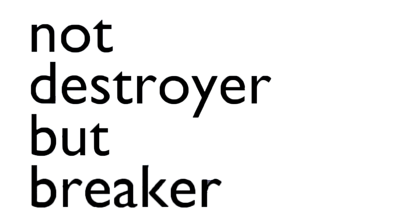
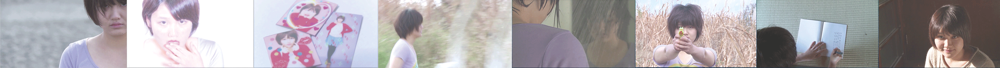
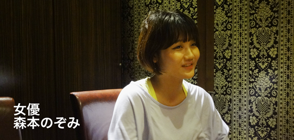
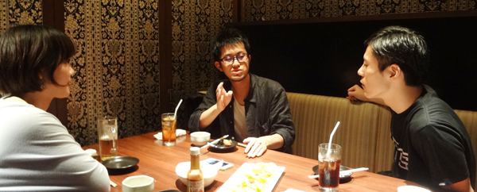
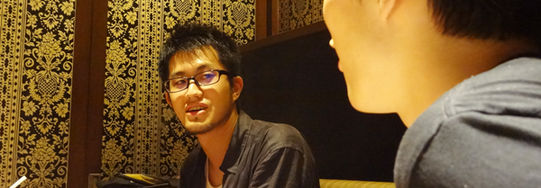
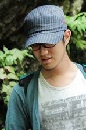

MV

LYRICS
not destroyer but breaker
作詞・作曲 さわいかん
演奏 deronderonderon
開放的破壊を 計画的起爆を
愉快的非力を 崩壊的知性を
壊そう浮き世 愛もって建てよう
黙れ白昼夢 うわべはもう飽きた
so ウザイ 超ウザイ もうウザイ
Yes call me breaker
壊したいの
聞こえないフリしないでよ
苦海みたいな景色 ツライツライツライ
笑い足んないなら笑えよっつってんだろその停止へ向かえよ
未来を見ないの
無い 応じない 機能 いんないっしょ
あほみたい 未来見ないの
無い 応じない 機能 いんないっしょ
あほみたい な希望いらんよ
壊したいの
聞こえないフリしないでよ
苦海みたいな景色 ツライツライツライ
笑い足んないなら笑えよっつってんだろその停止へ向かえよ
未来を見ないの
監督INTERVIEW
監督深田隆之と女優"森本のぞみ"に迫る
ぼくを経由して運命的に繋がっていた
さわいかん（以下さわい）："not destroyer but breaker"MV監督の深田隆之さんです、よろしくお願いします！
深田隆之（以下深田）：よろしくおねがいします！
さわい：しかも今回、このインタビュー企画で初めて、今回はderonderonderonのメンバーを交えてインタビューを行うんです！というのも、見てくださった方はご存知だと思うのですが、このMVはderonderonderonのドラマーである森本のぞみが主演の作品だからなんです。なので、のぞみちゃんも今日はよろしくおねがいします。
森本のぞみ（以下のぞみ）：よろしくおねがいしまーす！
さわい：では、毎回おなじみではあるのですが、深田さん自己紹介をお願いします。
深田：普段は作品としては映画を作っています。ライブや舞台の記録もやってたりもするんだけど、基本的に作品として出すのは映画がメインだね。今回初めてMVを作りました。
さわい：ありがとうございます！先に、ちょっと僕と深田さんの関係性を整理したいです。
初めてお会いしたのは、濱田陽平というダンサーのソロ公演”えらびしぶる”の時ですよね。僕が音響をやっていて、深田さんが制作をしていて。あれ何年前でしたっけ？（笑）
深田：んーとねぇ。公演自体は、2012年5月とかだったよね。
さわい：あ！そうそう、初顔合わせが、2011年の12月ぐらいだったんですよ！
深田：えっ！そんな前だったっけ！えっ！（笑）タイム感がよくわからなくなって来た（笑）そう考えると、２年半ぐらいの付き合いなんだね。
さわい：あの時は、こんなに髭が生えてなかったですよね。（笑）
深田：そうだよね！（笑）
のぞみ：2011年12月は、私がかんさんと初めて会ったときですね。
さわい：あっそんな前か！こういう意味でも、深田さんとのぞみちゃんはぼくを経由して運命的に繋がってたんや…。

あの写真が発端（笑）
さわい：MVの話に移るんですが、深田さんにMVの製作をお願いする際にタイトル通りに「ぶちこわして欲しい」とぼくはザックリと要求しました。
僕らなりの挑戦がしたいな、という気持ちで深田さんにお願いをしましたよね。
深田さんの尖った部分をめちゃくちゃ知りたいというのもありました。
深田：うん。かんからMVの話を頂いた最初の会話で「今回はこぎれいなものは撮らない」「ほんわかした感じのものは撮らない」という話をしていたと思う。
さわい：のぞみちゃんを主役に立てるっていう話はどっから出たんでしたっけ？（笑）僕でしたっけ？
深田：あれはおれが言い出したの！（笑）
さわい：え！そうでしたっけ！（笑）
深田：たしかねぇ。「基本的に好きな事をやってください。こんな曲なんで、キレイな絵よりかは、今迄撮った事ないような作品にしてみてください。」って言われて（笑）
ただ、MVと言えども、自分の作品としてちゃんと世に放ちたいと思ったのね。で、自分の作品ではいつも女の人にフォーカスするから、女の人をとりあえず出そう。って会話になった気がするんだよ。
そしたらかんが「イイ人居ますよ！」って言って、のぞみちゃんがパセリを頬張ってる写真を俺に見せた。
全員：ああああああー！（笑）
深田：で、「壊したいんですよ。」って言ってたから。よし、この子でいこうってその時に決まったんだよ。それが全てなんだよ。（笑）
さわい：あの写真いいですよね。
深田：あれいいよね。あの写真が発端。（笑）
のぞみ：たまたま撮ったやつが…。
さわい：色々思い出してきましたよ！撮影は去年の12月あたりで、話は去年の7月とか8月くらいでしたね。
大好き！アイラブユー！
さわい：僕は撮影にはほとんど行けなかったですけど、今回のぞみちゃんにかなり無茶ブリをしたと思うんですよ。
実際にどうでしたか？
深田：これはまず、のぞみちゃんに聞いてみたいな！あれは辛かったとか、もうやりたくないとかってあった？
のぞみ：12月だったんで寒かったのが辛かったです。
深田：4日間くらい？
のぞみ：そうですねー。海の近くとかで半袖になってじっと耐えるのが辛かったのと。
あと走った時ですね。
さわい：走った時？
さわい、深田：はははははは！（爆笑）
のぞみ：「本気の疲れた顔が撮りたいから」って言われて、ダッシュで何百メートルも走った後の顔を撮るときに、もう、死ぬかと思いました（笑）
深田：普通のトラックみたいなところでめちゃくちゃ走ってもらった。（笑）
のぞみ：部活を思い出しましたよ。中学時代のバレー部を。
深田：パイ投げとかはどうだった？
のぞみ：あれは全然嫌じゃなかったです。やっぱり経験してみたかったんで！
でも、さわいかんにやられるのはほんとに嫌でした。
全員：(爆笑)
のぞみ：フフフ
さわい：この作品では、色んなのぞみちゃんを垣間見れるんですけど、ぼくのすごく印象に残ってるのぞみちゃんは、クリームをペロってやってるのぞみちゃんなんですよね。この娘、女優向いてるんじゃないかって勝手に思ってます。
深田：クリームはなんかめちゃくちゃ上手かったんだよね！
のぞみ：めっちゃ指導されましたからね。
深田：そうだね。まぁ、のぞみちゃんの色んな姿っていうのは、自分を壊すような事を意識してた。変な格好してみたり、アイドルっぽく上目遣いしてみたりっていう。ってかのぞみちゃんに「アイドルっぽく上目遣いして」って言ったよね。
のぞみ：言われましたね（笑）チュッパチャップスのとこも大変でした。
さわい：のぞみちゃんってやっぱ女優ですよね。
メンバーで一番映像写りが良いというか、期待に応えてくれるし、可能性に満ちあふれてるといつも思ってます。
深田：のぞみちゃんは、カメラ覗いたときの印象が全く違う。めちゃくちゃイイんだよねのぞみちゃん。
のぞみ：そんなに言われると照れます（笑）
さわい：のぞみちゃんの振れ幅はほんとに未知数で、だからMVが完成するまで「のぞみちゃんはどんなことをするんやろう」ってすごいワクワクしてました。完成したときに、「こののぞみちゃんヤッバイで！（笑）」って思いましたね！
女優森本のぞみがここに居ますね。
深田：縁側で膝枕をしてるシーンは、撮影が後半の方でのぞみちゃんも無茶ブリにも慣れてき始めてて。めちゃくちゃ良い顔してるんだよね。かんを庇護してる雰囲気というか。演技のノリ方が撮る度に良くなってきてて、完全に違う人っていう感じだったね。
さわい：あー、そうですね。母性を解き放ったような笑顔をしてますね（笑）
のぞみ：あの顔は自然とできました。
さわい：マジで女優の道行ってみる？
のぞみ：女優の道はいいです。（笑）
深田：deronのことを知ってる人は余計にこのMVは楽しくなるだろうね。
メンバーの個性を知ってる人ならなおさら。このMVっていわゆるバンドのMVっぽくないと思ってて。演奏シーンも無ければ、ドラマっぽいかと言われればそうでもないし、スタンダードな撮り方ではないからどういう風に見えるのかな？って思ってる。
さわい：シーンによって絵の色味や質感が違うし、もちろん色んなのぞみちゃんがいるし、のぞみちゃんをいかに違うものに昇華していくかっていう実験がすごく効果的に表現できてるなと思ってます。なんていうか、深田さんはよっぽどのぞみちゃんのことが好きなんだろうなって感じました。
深田：大好き！アイラブユー！（笑）
ただね、撮影を4日間に渡って行ったんだけど、撮影が進めば進むほど、のぞみちゃんの拒絶の反応がにじみ出てきてて。
3日目ぐらいは「えっ、なんすか？」っていうのがのぞみちゃんからチラっと出たときはあった。攻撃的な部分を一瞬感じたんだよね撮影中に。
のぞみ：あー、あった気がします。ほら、なんかね、親しくなるほどそういう感じになるじゃないですか、人って。（笑）
さわい：なるほど。。。逆にのぞみちゃんは、このシーンが楽しかったとかってある？
のぞみ：モノをくわえるシーンですかね。笑っちゃダメだったんですけどこらえきれなくて笑っちゃいました。噛んでキレイに落ちるのが正解のシーンだったんですけど、ほとんど全部「ぼろん」って落ちちゃって、アスパラとかごぼうぐらいでしたよね。（終始笑顔）
深田：いわゆる小道具を使ったのが多かったよね。
のぞみ：チュッパチャップスを噛むシーンが一番大変でした。笑っちゃって。まず固いし、「割れない」って（笑） ラスト１個になってみんなに「笑っちゃダメだよ」って言われながら必死で噛みました。

deronderonderonにはバカでいてほしい
さわい：深田さんからこのMVの見所を教えてください！
深田：これからderonを知る人にももちろん見てもらいたいんだけど、deronのことを知ってる人にまず見て欲しい。楽しんで欲しいな。
あと、とにかく好き勝手にやらしてもらったことも見所ですね。このMVはのぞみちゃんが全てだし、のぞみちゃんを見てください。
さわい：のぞみちゃんは、今回まるまる全部のぞみちゃんという状態で私のここを見てくれ！っていのはある？
のぞみ：全部です。全部私です。そうですね、全部私ですね。
深田：結構すごい発言だね！（笑）
さわい：のぞみちゃんをエエ感じで料理してくれましたよね！またこのタッグの作品を見たいですね。次回はどうなるんですかね。
深田：でも、またまだのぞみちゃんには秘めた部分がいっぱいあると思うんだよね。
さわい：のぞみちゃんはどうよ？
のぞみ：またやりたいですね！ほんと、楽しかったです！無限の可能性を感じて。（笑）
さわい：じゃあ次回は、のぞみちゃんの「あんなことしたい、こんなことしたい」を実現してみよっか！
最後に、deronderonderonにはこうなって欲しいっていうのはありますか？
深田：とにかくこれからもずっとバカなことをしていってほしい！今回のMVはderonだったから作れたと思うんだよね。曲はもちろんは良いし、もっとバカでいてくれ！
さわい：ありがとうございました！深田隆之さんでした！
深田隆之
------
1988年生まれ。
東京造形大学卒業後、映画をはじめ、ダンスビデオ作品、中高生を対象とした映像ワークショップ等、様々な映像・映画の試みを継続している。
2012年に制作したダンスビデオ作品「M/W」は第7回国際ダンス映画祭で上映され、昨年制作した短編映画「one morning」は仙台・和歌山の短篇映画祭で入選・上映された。
